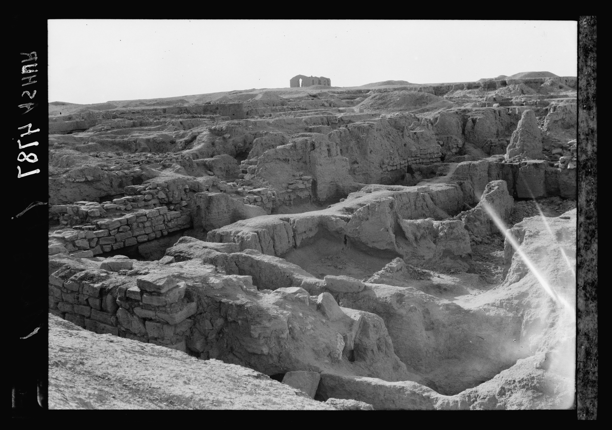

Assur (Ashur)

- Find Name
- Assur (Ashur)
- Description
- The first capital of Assyria and its enduring religious centre, on a rocky spur above the Tigris at Qal'at Sherqat. Walter Andrae's meticulous excavations of 1903-1914 uncovered a double-walled city with named gates, a ziggurat that still dominates the skyline, the temple of the god Ashur with its courts and tower, and temples to Ishtar, Sin, Shamash, Anu, Adad, and Nabu — more than half of all Assyrian temples yet uncovered, spanning from the mid-third millennium to the late seventh century BC. Though later kings moved the political capital to Calah, Dur-Sharrukin, and Nineveh, Assyrian kings were still brought back to Assur for burial, and the city gave its name to the land, the kingdom, and the empire. It fell to the Babylonians and Medes in 614 BC, two years before Nineveh.
- Historical Period
- Old Assyrian to Neo-Assyrian, 3rd millennium to 614 BC
- Evidence Class
- Contextual
- Interpretations
- Scholars agree Qal'at Sherqat is ancient Assur; the identification is secure. The KJV's 'Asshur' in Genesis 10:11 is the name of the city, its god, and the people together, so the verse illuminates the city rather than naming a single excavated building, and the entry is classed Contextual for that reason, not Direct. No profile exists yet for an individual king of Assur, so RelatedPeople is honestly empty.
- Alternative Names
- Ashur; Asshur; Qal'at Sherqat
- Related Places
- Related Books
- Related Events
- Scripture Illuminated
- Biblical Significance
- Assur is the root of the Bible's Assyria: Genesis 10:11 records that out of Shinar 'went forth Asshur, and builded Nineveh, and the city Rehoboth, and Calah' — the city, the god, and the land share one name. Micah's promise that the ruler from Bethlehem would deliver Israel from 'the land of Assyria' and 'the land of Nimrod' (Micah 5:6) is aimed at the empire this city founded and sanctified. Assur explains why Assyria, in Scripture, is never just an army but a civilisation with a holy city.
- Artifact Date
- Settled c. 2500 BC; temple of Ashur and ziggurat, rebuilt by successive kings to the 7th century BC
- Current Location
- In situ, Iraq (finds chiefly in the Vorderasiatisches Museum, Berlin; UNESCO World Heritage Site, on the danger list)
- Date Discovered
- 1903-1914 (Walter Andrae, German Oriental Society)
- Discovery Location
- Qal'at Sherqat, on the Tigris between Mosul and Baghdad, Iraq
- Timeline Era
- Divided Monarchy
Awaiting Review Not yet checked against scholarly sources. Treat its claims as provisional until this entry is reviewed. About verification
Last reviewed: not yet reviewed